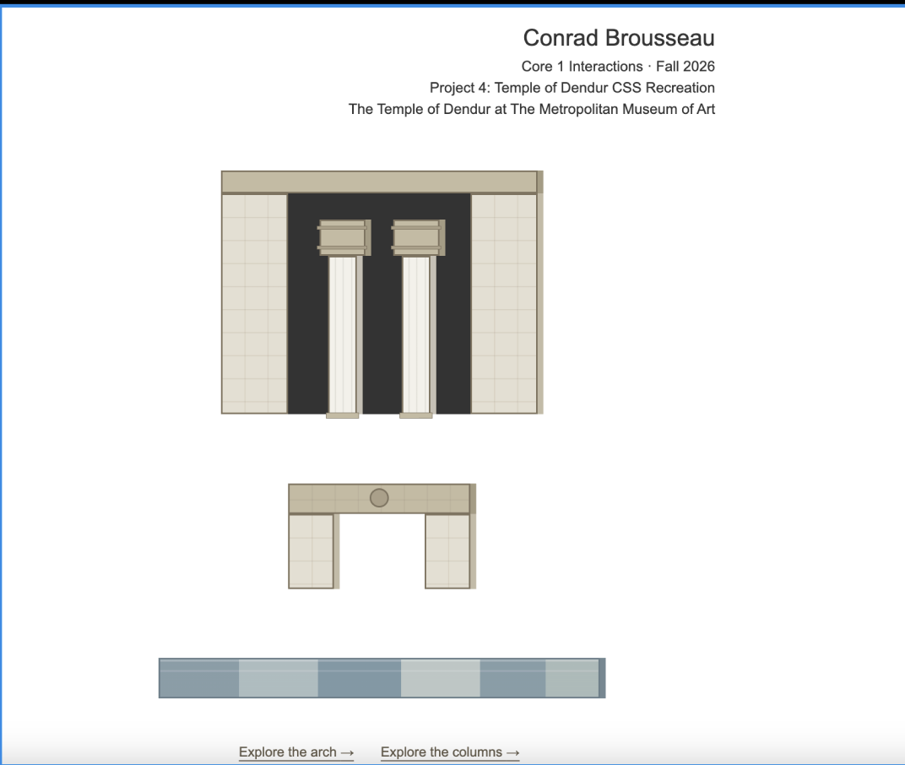

Conrad
TEMPLE
OF DENDUR.
An architectural landmark translated into a digital composition.

Architecture,
reduced to its lines.
This digital recreation looks at the Temple of Dendur through its most recognizable architectural elements: the broad stone facade, paired columns, central entrance, and horizontal band of water. The simplified shapes and muted stone colors make the structure readable through proportion and silhouette.
By translating the monument into CSS, the work turns architecture into a study of layers and relationships. The result is not a photograph of the temple, but a screen-based interpretation that asks how a place can still be recognizable when its details are reduced to shape, color, and structure.
CSS recreation by Conrad Brousseau, Core 1 Interactions, Fall 2026. Inspired by the Temple of Dendur at The Metropolitan Museum of Art.